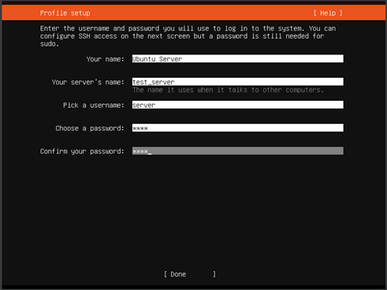
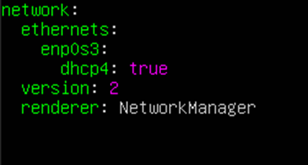
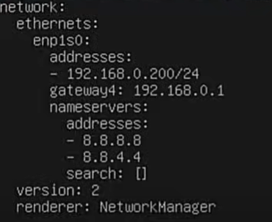

#Snipe-IT: Revolutionizing Asset Management
Snipe-IT is an open-source asset management software designed to help organizations efficiently track and manage IT assets. It provides a user-friendly interface for managing assets such as hardware, software, licenses, and accessories. With Snipe-IT, users can easily catalog assets, assign them to specific users or locations, track their movements, monitor maintenance schedules, and generate comprehensive reports.I was able to host it on my computer using Ubuntu Server in a VM and deploy it for test purposes. I want to share the experience of what I did to run the open-source system.
Setup
Tools Used:- VM
- Ubuntu Server
- NGINX
- MySQL Server
- PHP FPM
- Snipe-IT
Setting Up:
The setup for the VM and Ubuntu Server was standard with minimum resources.
- We Need to figure out if we want the static IP address or the DHCP address on the server, after figuring that we can set the IP address of the server. (Class of address)
- If there is a proxy server in your gateway, the address should be placed when prompted. 
- To run a headless server, we need to install the OpenSSH server.

Security Measures
- Update
- Automate the updates by running: (Scripts)
- APT is a powerful tool for handling the installation and removal of software.
- cd /etc/apt/apt.conf.d
- In the 50unattended-upgrades file the security section should be uncommented as it allows for automatic updates.
- On the same file there is a code where the automatic reboot is false and we need to uncomment that and also the automatic reboot time. It can be found by using Ctrl+w to search.
- Try to find Unattended-upgrade and read the content on how you want to configure the updates.
- The 20auto-upgrades will allow you to check if the updates are enabled or disabled.
- To check if the services are running or not through the systemctl command.

Networking
- The network configuration is stored in the 00-installer-config.yaml file located in etc/netplan.
- Configure to your network and apply it by using: sudo netplan apply.
- Need to install the open SSH connection to the host and the computer we are connecting from.
- Cmd: ssh hostname@IP_Address
- It allows access to the server from the local network to the browser.
- To configure the cockpit with the server we need to make adjustments in:
- sudo nanp /etc/ netplan/00-installer-config.yaml 
- This conf is used when the DHCP is set to give Ip address on its own. If there is a static IP the network section would look different for instance: 
- apt install php8.1 {bcmath,common,ctype,curl,fileinfo,fpm,gd,iconv,intl,mbstring,mysql,soap,xml,xsl,zip,cli}
Open SSH
Cockpit
o

o To apply the config: sudo netplan try
(NOTE: Turn on the Bridge Adapter of the VM) Install NGINX, MySQL, PHP and PHP FPM
Install NGINX, MySQL, PHP and PHP FPM
Nginx is a web server that can also be used as a reverse proxy, load balancer, mail proxy, and HTTP cache.
· sudo apt install nginx· sudo apt install mysql-server
· Install PHP
PHP >= 7.4 < v8.1.2 is required on the server.
· Install PHP FPM.
It’s an efficient method to process dynamic content on your website, providing a significant speed boost. It maintains pools (workers ready to serve PHP code) to accomplish this. These persistent PHP processes can serve queries instantly without any delay in initializing the PHP process. This speeds up your PHP environment and, eventually, your web applications.
o sudo add-apt-repository universe
o sudo apt install php-fpm php-mysql
This command allows to install everything in a bulk.
To verify the installation, we have to browse to the IP address of the server and get the NGINX generic web page.

· Create a new site and test PHP
o Now we have to create a site for Snipe-IT, which is going to disable the default site
§ sudo nano /etc/nginx/sites-available/ams.teknex.com.au
o We are creating a file that will contain the script of the server which is going to look for the index of the website and php.
§

§ sudo ln -s /etc/nginx/sites-available/ams.teknex.com.au /etc/nginx/sites-enabled/
o Disable the default site
§ sudo unlink /etc/nginx/sites-enabled/default
After the installation is done, please restart the NGINX service.
o Sudo service nginx restart
o PHP: Create a simple PHP page and browse to IP of the localhost
§ sudo bash -c "echo -e '<?php\nphpinfo();\n?>' > /var/www/html/phpinfo.php"

(NOTE: Please do not proceed further if you do not see the PHP page)
Commands to Check if the installation is in the system and active.
o sudo service mysql status
o sudo php –version
o sudo mysql -V
o sudo nginx -V
o sudo php –version
· Create an initial database and user
|
o Database |
o Snipeit_db |
|
o User |
o Snipeit_user |
|
o Password |
o --------------- |
o sudo mysql -u root -p
o The database will open and enter the following command as the table.
§ Create DATABASE Snipeit_db;
§ Create User ‘Snipeit_user’@‘localhost’ IDENTIFIED BY ‘Password’;
§ GRANT ALL PRIVILEGES ON Snipeit_db.* TO ‘‘Snipeit_user’@‘localhost’;
· To verify permission
§ Show Grants For ‘Snipeit_user’@‘localhost’;
§ Flush privileges;
§ Quit
§ Sudo service mysql status (make sure it is active and running)
· Install Snipe-IT
o The working directory will be /var/www/html
o Clone the Snipe-IT in that directory.
§ sudo git clone https://github.com/snipe/snipe-it snipe-it
o If the command returns an error,
§ apt install git -y
o Now we have to go to the Snipe-IT directory copy the .env.example configuration file to .env and modify the content.
§ cp .env.example .env
o Open the .env fine that we copied with nano.
§ nano .env
·
APP_URL=IP of the host/ http://snipeit.yourdomain.com
APP_TIMEZONE='America/New_York'
· DB_DATABASE=Snipeit
· DB_USERNAME=Snipeit
· DB_PASSWORD=
§

(Note: Use the configuration name from the table above)
· To change the mail settings in the .env file;
o MAIL_HOST=smtp.gmail.com
o MAIL_PORT=587
o MAIL_ENCRYPTON=TLS (or SSL depending on port)
· Now we have changed the permission of the folder of the Snipe-IT directory.
o Cd /var/www/html/snipeit
§ sudo chown -R www-data:www-data /var/www/snipeit/
§ sudo chmod -R 755 storage
§ sudo chmod -R 755 public/upoads
· Download, Install and configure Composer.
o Composer is a tool for dependency management in PHP. It allows you to declare the libraries your project depends on and it will manage (install/update) them for you.
§ To manage Snipe-IT components and their dependencies we are going to use Composer.
· curl -sS https://getcomposer.org/installer -o composer-setup.php
· php composer-setup.php --install-dir=/usr/local/bin --filename=composer
· composer update --no-plugins --no-scripts
· composer install --no-dev --prefer-source --no-plugins --no-scripts
· Generate App Key for .env file
o First enter the value that needs to be changed in the .env file, otherwise the keys will not be generated.
o sudo php artisan key:generate
§ To check the key open .env file and check the APP_Key value.
· Now restart all the services or reboot the system and be ready for Snipe-IT pre-flight setup.

Experience
Setting up a dedicated server in the network and implementing a comprehensive system for managing the organization's assets is a step forward in streamlining bookkeeping processes. Transitioning from Excel spreadsheets to an open-source inventory management system brings many benefits that not only enhance efficiency but also empower IT professionals with greater control and oversight.
The decision to migrate to an open-source inventory management system is indeed rewarding, as it increases the visibility of how assets are monitored and managed within the organization. By moving away from Excel, which often presents challenges in maintaining accuracy and accessibility, the new system promises to offer heightened visibility into the organization's assets. This heightened visibility enables IT professionals to track assets in real time, providing insights into their location, usage patterns, and status.
One of the key advantages of having such visibility over assets is the ability to ensure compliance with regulatory requirements and internal policies. As an IT professional, compliance is foremost, and having accurate and up-to-date records of assets is crucial in meeting regulatory standards. Furthermore, the ability to closely monitor assets reduces the risk of non-compliance and associated penalties. Additionally, the system's robust tracking capabilities play a vital role in mitigating risks such as loss, theft, or damage, by allowing for timely interventions and security measures.
Moreover, the transition to the open-source inventory management system aligns perfectly to maintain a secure network infrastructure. By implementing this system, IT professionals can establish secure servers and network configurations to safeguard sensitive asset data. This not only protects the organization's assets but also bolsters overall cybersecurity measures, ensuring that the network remains resilient against potential threats and vulnerabilities.